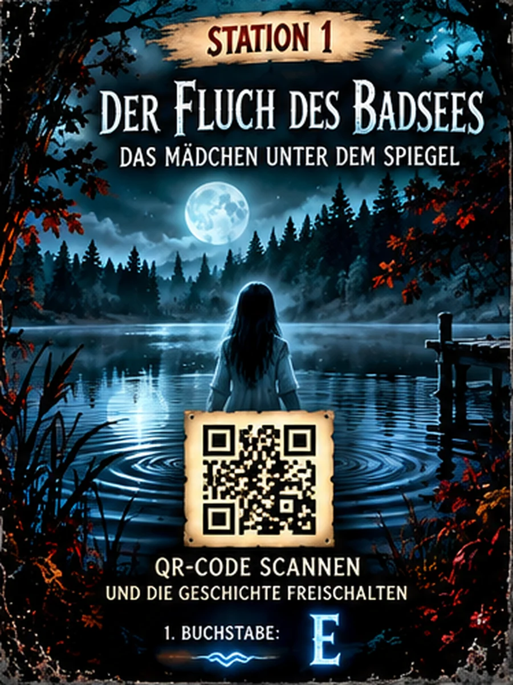

Das Geheimnis der dreizehnten SeiteSTATION 01 / 07
Der Wolf im Nebel
Die Geschichte
✦ Lausche. Entdecke. Löse.Das Rätsel
Dein Hörspiel
Startet erst, wenn du eine Schaltfläche antippst – auch auf iPhone und Android.
Bereit. Tippe auf „Ton testen“, um die Wiedergabe zu prüfen.
85 %
Kein Ton? Diagnose und alternative Wiedergabe
Die App nutzt echte MP3-Dateien statt der Handy-Sprachausgabe. Öffne diese Seite direkt in Chrome oder Safari (nicht in der Vorschau einer anderen App), prüfe die Medienlautstärke und tippe auf den integrierten Audioplayer. Ist dort Ton zu hören, liegt das Problem an der Browser-Wiedergabesteuerung.
Audiodiagnose ist bereit.